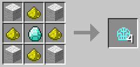

3 glass blocks
1 redstone dust
1 gaslight mantle
4 glowstone dust
1 diamond

1 charcoal
| Product | Ingredients | Recipe | Notes |
| Carbide Floodlight |
4 cobblestone 3 glass blocks 1 redstone dust 1 gaslight mantle |
||
| Gaslight Mantle |
4 wool 4 glowstone dust 1 diamond |
 |
|
| Calcium Carbide |
1 bonemeal-charcoal mixture |
|
|
| Bonemeal-Charcoal Mixture |
1 bonemeal 1 charcoal |